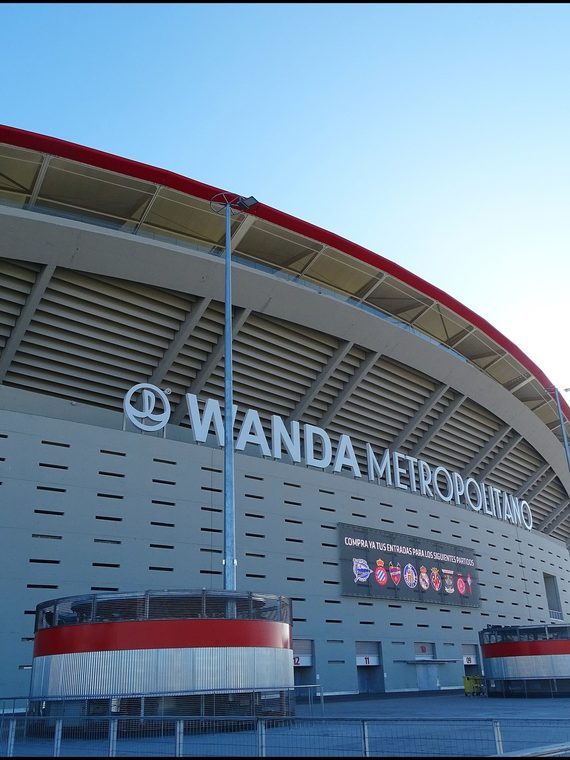
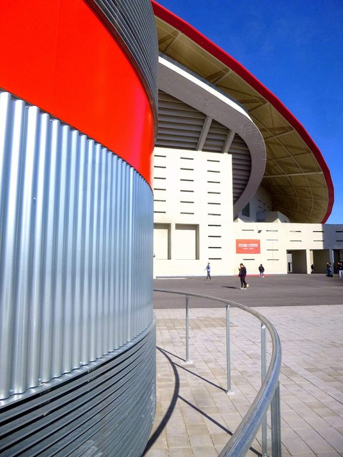
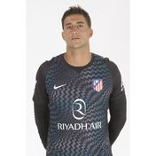
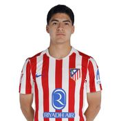
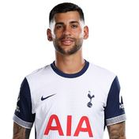
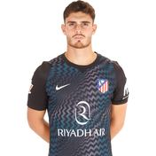

AM
';" />El espíritu 'nunca dejes de luchar'
Atlético de Madrid
1903
Año de fundación del club
Colchoneros / Rojiblancos
Una breve historia
Fundado en 1903, el Atlético de Madrid construyó su identidad sobre la garra y el sacrificio, resumidos en su lema 'Nunca dejes de creer'. Bajo Diego Simeone vivió su etapa más exitosa reciente, incluyendo dos finales de Champions League.
Fieles a los colores
de Madrid

📷Foto pendiente
(atletico-de-madrid-1.jpg)';" />

📷Foto pendiente
(atletico-de-madrid-2.jpg)';" />
Títulos y logros
Vitrina de títulos
0
LaLiga
0
Copa del Rey
0
UEFA Europa League
0
Supercopa de Europa
La rivalidad
El duelo que enciende a la afición
Atlético de Madrid
VS
Real Madrid CF — El Derbi Madrileño
Temporada 2026 / 27
Plantilla del primer equipo
Datos de ejemplo — reemplázalos con la plantilla real en data/teams.js.
1

🧑';" /> J. Musso Portero
3

🧑';" /> Obed Vargas Centrocampista
4
🧑';" />
Mendoza
Centrocampista
5
🧑';" />
Johnny
Centrocampista
6
🧑';" />
Koke
Centrocampista
7
🧑';" />
Kang In
Centrocampista
8
🧑';" />
Barrios
Centrocampista
9
🧑';" />
Sørloth
Delantero
10
🧑';" />
Álex B.
Centrocampista
11
🧑';" />
Lookman
Delantero
13
🧑';" />
Oblak
Portero
14
🧑';" />
M. Llorente
Centrocampista
15
🧑';" />
J.david
Delantero
16
🧑';" />
Arnau Ortiz
Centrocampista
17
🧑';" />
Hancko
Defensa
18
🧑';" />
Marc Pubill
Defensa
19
🧑';" />
J.alvarez
Delantero
20
🧑';" />
Giuliano
Delantero
21

🧑';" /> Romero Defensa
22
🧑';" />
Grimaldo
Defensa
23
🧑';" />
Hjulmand
Centrocampista
24
🧑';" />
Le Normand
Defensa
25

🧑';" /> Esquivel Portero
27
🧑';" />
Domínguez
Defensa
29
🧑';" />
Cubo
Delantero
30
🧑';" />
D. Martínez
Defensa
45
🧑';" />
Javier Gil
Defensa
46
🧑';" />
Castillo
Centrocampista